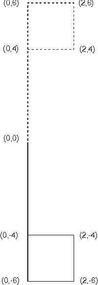

A negative scaling factor causes a reflection of the object to be drawn. A scaling factor of -1, for example, causes a mirror image of the object to be drawn in the appropriate direction.
The following figure shows the flag reflected by applying a negative y scaling factor.

Reflection